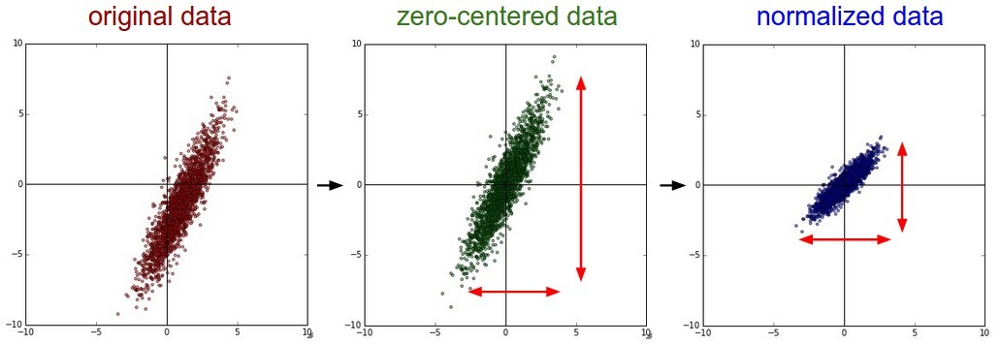
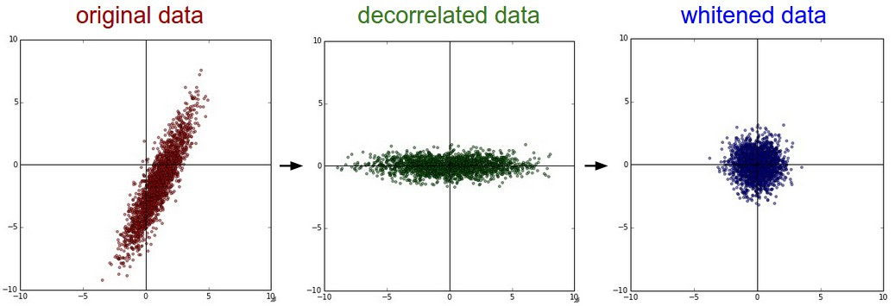
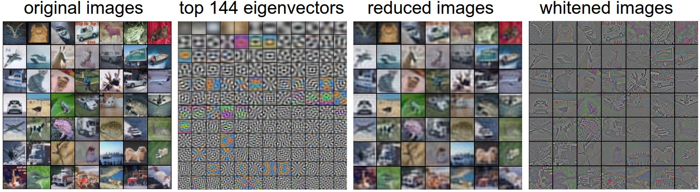
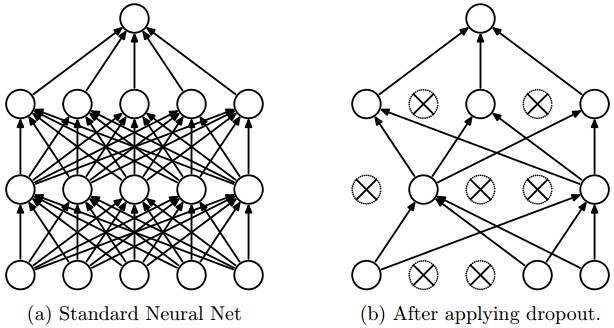

Table of Contents:
In the previous section we introduced a model of a Neuron, which computes a dot product following a non-linearity, and Neural Networks that arrange neurons into layers. Together, these choices define the new form of the score function, which we have extended from the simple linear mapping that we have seen in the Linear Classification section. In particular, a Neural Network performs a sequence of linear mappings with interwoven non-linearities. In this section we will discuss additional design choices regarding data preprocessing, weight initialization, and loss functions.
There are three common forms of data preprocessing a data matrix
X, where we will assume that X is of size
[N x D] (N is the number of data,
D is their dimensionality).
Mean subtraction is the most common form of
preprocessing. It involves subtracting the mean across every individual
feature in the data, and has the geometric interpretation of
centering the cloud of data around the origin along every dimension. In
numpy, this operation would be implemented as:
X -= np.mean(X, axis = 0). With images specifically, for
convenience it can be common to subtract a single value from all pixels
(e.g. X -= np.mean(X)), or to do so separately across the
three color channels.
Normalization refers to normalizing the data
dimensions so that they are of approximately the same scale. There are
two common ways of achieving this normalization. One is to divide each
dimension by its standard deviation, once it has been zero-centered:
(X /= np.std(X, axis = 0)). Another form of this
preprocessing normalizes each dimension so that the min and max along
the dimension is -1 and 1 respectively. It only makes sense to apply
this preprocessing if you have a reason to believe that different input
features have different scales (or units), but they should be of
approximately equal importance to the learning algorithm. In case of
images, the relative scales of pixels are already approximately equal
(and in range from 0 to 255), so it is not strictly necessary to perform
this additional preprocessing step.

PCA and Whitening is another form of preprocessing. In this process, the data is first centered as described above. Then, we can compute the covariance matrix that tells us about the correlation structure in the data:
# Assume input data matrix X of size [N x D]
X -= np.mean(X, axis = 0) # zero-center the data (important)
cov = np.dot(X.T, X) / X.shape[0] # get the data covariance matrixThe (i,j) element of the data covariance matrix contains the covariance between i-th and j-th dimension of the data. In particular, the diagonal of this matrix contains the variances. Furthermore, the covariance matrix is symmetric and positive semi-definite. We can compute the SVD factorization of the data covariance matrix:
U,S,V = np.linalg.svd(cov)where the columns of U are the eigenvectors and
S is a 1-D array of the singular values. To decorrelate the
data, we project the original (but zero-centered) data into the
eigenbasis:
Xrot = np.dot(X, U) # decorrelate the dataNotice that the columns of U are a set of orthonormal
vectors (norm of 1, and orthogonal to each other), so they can be
regarded as basis vectors. The projection therefore corresponds to a
rotation of the data in X so that the new axes are the
eigenvectors. If we were to compute the covariance matrix of
Xrot, we would see that it is now diagonal. A nice property
of np.linalg.svd is that in its returned value
U, the eigenvector columns are sorted by their eigenvalues.
We can use this to reduce the dimensionality of the data by only using
the top few eigenvectors, and discarding the dimensions along which the
data has no variance. This is also sometimes referred to as Principal
Component Analysis (PCA) dimensionality reduction:
Xrot_reduced = np.dot(X, U[:,:100]) # Xrot_reduced becomes [N x 100]After this operation, we would have reduced the original dataset of size [N x D] to one of size [N x 100], keeping the 100 dimensions of the data that contain the most variance. It is very often the case that you can get very good performance by training linear classifiers or neural networks on the PCA-reduced datasets, obtaining savings in both space and time.
The last transformation you may see in practice is whitening. The whitening operation takes the data in the eigenbasis and divides every dimension by the eigenvalue to normalize the scale. The geometric interpretation of this transformation is that if the input data is a multivariable gaussian, then the whitened data will be a gaussian with zero mean and identity covariance matrix. This step would take the form:
# whiten the data:
# divide by the eigenvalues (which are square roots of the singular values)
Xwhite = Xrot / np.sqrt(S + 1e-5)Warning: Exaggerating noise. Note that we’re adding 1e-5 (or a small constant) to prevent division by zero. One weakness of this transformation is that it can greatly exaggerate the noise in the data, since it stretches all dimensions (including the irrelevant dimensions of tiny variance that are mostly noise) to be of equal size in the input. This can in practice be mitigated by stronger smoothing (i.e. increasing 1e-5 to be a larger number).

We can also try to visualize these transformations with CIFAR-10 images. The training set of CIFAR-10 is of size 50,000 x 3072, where every image is stretched out into a 3072-dimensional row vector. We can then compute the [3072 x 3072] covariance matrix and compute its SVD decomposition (which can be relatively expensive). What do the computed eigenvectors look like visually? An image might help:

In practice. We mention PCA/Whitening in these notes for completeness, but these transformations are not used with Convolutional Networks. However, it is very important to zero-center the data, and it is common to see normalization of every pixel as well.
Common pitfall. An important point to make about the preprocessing is that any preprocessing statistics (e.g. the data mean) must only be computed on the training data, and then applied to the validation / test data. E.g. computing the mean and subtracting it from every image across the entire dataset and then splitting the data into train/val/test splits would be a mistake. Instead, the mean must be computed only over the training data and then subtracted equally from all splits (train/val/test).
We have seen how to construct a Neural Network architecture, and how to preprocess the data. Before we can begin to train the network we have to initialize its parameters.
Pitfall: all zero initialization. Lets start with what we should not do. Note that we do not know what the final value of every weight should be in the trained network, but with proper data normalization it is reasonable to assume that approximately half of the weights will be positive and half of them will be negative. A reasonable-sounding idea then might be to set all the initial weights to zero, which we expect to be the “best guess” in expectation. This turns out to be a mistake, because if every neuron in the network computes the same output, then they will also all compute the same gradients during backpropagation and undergo the exact same parameter updates. In other words, there is no source of asymmetry between neurons if their weights are initialized to be the same.
Small random numbers. Therefore, we still want the
weights to be very close to zero, but as we have argued above, not
identically zero. As a solution, it is common to initialize the weights
of the neurons to small numbers and refer to doing so as symmetry
breaking. The idea is that the neurons are all random and unique in
the beginning, so they will compute distinct updates and integrate
themselves as diverse parts of the full network. The implementation for
one weight matrix might look like
W = 0.01* np.random.randn(D,H), where randn
samples from a zero mean, unit standard deviation gaussian. With this
formulation, every neuron’s weight vector is initialized as a random
vector sampled from a multi-dimensional gaussian, so the neurons point
in random direction in the input space. It is also possible to use small
numbers drawn from a uniform distribution, but this seems to have
relatively little impact on the final performance in practice.
Warning: It’s not necessarily the case that smaller numbers will work strictly better. For example, a Neural Network layer that has very small weights will during backpropagation compute very small gradients on its data (since this gradient is proportional to the value of the weights). This could greatly diminish the “gradient signal” flowing backward through a network, and could become a concern for deep networks.
Calibrating the variances with 1/sqrt(n). One
problem with the above suggestion is that the distribution of the
outputs from a randomly initialized neuron has a variance that grows
with the number of inputs. It turns out that we can normalize the
variance of each neuron’s output to 1 by scaling its weight vector by
the square root of its fan-in (i.e. its number of inputs). That
is, the recommended heuristic is to initialize each neuron’s weight
vector as: w = np.random.randn(n) / sqrt(n), where
n is the number of its inputs. This ensures that all
neurons in the network initially have approximately the same output
distribution and empirically improves the rate of convergence.
The sketch of the derivation is as follows: Consider the inner product \(s = _i^n w_i x_i\) between the weights \(w\) and input \(x\), which gives the raw activation of a neuron before the non-linearity. We can examine the variance of \(s\):
\[ \begin{align} \text{Var}(s) &= \text{Var}(\sum_i^n w_ix_i) \\\\ &= \sum_i^n \text{Var}(w_ix_i) \\\\ &= \sum_i^n [E(w_i)]^2\text{Var}(x_i) + [E(x_i)]^2\text{Var}(w_i) + \text{Var}(x_i)\text{Var}(w_i) \\\\ &= \sum_i^n \text{Var}(x_i)\text{Var}(w_i) \\\\ &= \left( n \text{Var}(w) \right) \text{Var}(x) \end{align} \]
where in the first 2 steps we have used properties of variance.
In third step we assumed zero mean inputs and weights, so \(E[x_i] =
E[w_i] = 0\). Note that this is not generally the case: For example ReLU
units will have a positive mean. In the last step we assumed that all
\(w_i, x_i\) are identically distributed. From this derivation we can
see that if we want \(s\) to have the same variance as all of its inputs
\(x\), then during initialization we should make sure that the variance
of every weight \(w\) is \(1/n\). And since \((aX) = a^2(X)\) for a
random variable \(X\) and a scalar \(a\), this implies that we should
draw from unit gaussian and then scale it by \(a = \), to make its
variance \(1/n\). This gives the initialization
w = np.random.randn(n) / sqrt(n).
A similar analysis is carried out in Understanding
the difficulty of training deep feedforward neural networks by
Glorot et al. In this paper, the authors end up recommending an
initialization of the form \( (w) = 2/(n_{in} + n_{out}) \) where
\(n_{in}, n_{out}\) are the number of units in the previous layer and
the next layer. This is based on a compromise and an equivalent analysis
of the backpropagated gradients. A more recent paper on this topic, Delving Deep
into Rectifiers: Surpassing Human-Level Performance on ImageNet
Classification by He et al., derives an initialization specifically
for ReLU neurons, reaching the conclusion that the variance of neurons
in the network should be \(2.0/n\). This gives the initialization
w = np.random.randn(n) * sqrt(2.0/n), and is the current
recommendation for use in practice in the specific case of neural
networks with ReLU neurons.
Sparse initialization. Another way to address the uncalibrated variances problem is to set all weight matrices to zero, but to break symmetry every neuron is randomly connected (with weights sampled from a small gaussian as above) to a fixed number of neurons below it. A typical number of neurons to connect to may be as small as 10.
Initializing the biases. It is possible and common to initialize the biases to be zero, since the asymmetry breaking is provided by the small random numbers in the weights. For ReLU non-linearities, some people like to use small constant value such as 0.01 for all biases because this ensures that all ReLU units fire in the beginning and therefore obtain and propagate some gradient. However, it is not clear if this provides a consistent improvement (in fact some results seem to indicate that this performs worse) and it is more common to simply use 0 bias initialization.
In practice, the current recommendation is to use
ReLU units and use the
w = np.random.randn(n) * sqrt(2.0/n), as discussed in He et
al..
Batch Normalization. A recently developed technique by Ioffe and Szegedy called Batch Normalization alleviates a lot of headaches with properly initializing neural networks by explicitly forcing the activations throughout a network to take on a unit gaussian distribution at the beginning of the training. The core observation is that this is possible because normalization is a simple differentiable operation. In the implementation, applying this technique usually amounts to insert the BatchNorm layer immediately after fully connected layers (or convolutional layers, as we’ll soon see), and before non-linearities. We do not expand on this technique here because it is well described in the linked paper, but note that it has become a very common practice to use Batch Normalization in neural networks. In practice networks that use Batch Normalization are significantly more robust to bad initialization. Additionally, batch normalization can be interpreted as doing preprocessing at every layer of the network, but integrated into the network itself in a differentiable manner. Neat!
There are several ways of controlling the capacity of Neural Networks to prevent overfitting:
L2 regularization is perhaps the most common form of
regularization. It can be implemented by penalizing the squared
magnitude of all parameters directly in the objective. That is, for
every weight \(w\) in the network, we add the term \( w^2\) to the
objective, where \(\) is the regularization strength. It is common to
see the factor of \(\) in front because then the gradient of this term
with respect to the parameter \(w\) is simply \(w\) instead of \(2 w\).
The L2 regularization has the intuitive interpretation of heavily
penalizing peaky weight vectors and preferring diffuse weight vectors.
As we discussed in the Linear Classification section, due to
multiplicative interactions between weights and inputs this has the
appealing property of encouraging the network to use all of its inputs a
little rather than some of its inputs a lot. Lastly, notice that during
gradient descent parameter update, using the L2 regularization
ultimately means that every weight is decayed linearly:
W += -lambda * W towards zero.
L1 regularization is another relatively common form of regularization, where for each weight \(w\) we add the term \(w \) to the objective. It is possible to combine the L1 regularization with the L2 regularization: \(_1 w + _2 w^2\) (this is called Elastic net regularization). The L1 regularization has the intriguing property that it leads the weight vectors to become sparse during optimization (i.e. very close to exactly zero). In other words, neurons with L1 regularization end up using only a sparse subset of their most important inputs and become nearly invariant to the “noisy” inputs. In comparison, final weight vectors from L2 regularization are usually diffuse, small numbers. In practice, if you are not concerned with explicit feature selection, L2 regularization can be expected to give superior performance over L1.
Max norm constraints. Another form of regularization is to enforce an absolute upper bound on the magnitude of the weight vector for every neuron and use projected gradient descent to enforce the constraint. In practice, this corresponds to performing the parameter update as normal, and then enforcing the constraint by clamping the weight vector \(\) of every neuron to satisfy \( _2 < c\). Typical values of \(c\) are on orders of 3 or 4. Some people report improvements when using this form of regularization. One of its appealing properties is that network cannot “explode” even when the learning rates are set too high because the updates are always bounded.
Dropout is an extremely effective, simple and recently introduced regularization technique by Srivastava et al. in Dropout: A Simple Way to Prevent Neural Networks from Overfitting (pdf) that complements the other methods (L1, L2, maxnorm). While training, dropout is implemented by only keeping a neuron active with some probability \(p\) (a hyperparameter), or setting it to zero otherwise.

Vanilla dropout in an example 3-layer Neural Network would be implemented as follows:
""" Vanilla Dropout: Not recommended implementation (see notes below) """
p = 0.5 # probability of keeping a unit active. higher = less dropout
def train_step(X):
""" X contains the data """
# forward pass for example 3-layer neural network
H1 = np.maximum(0, np.dot(W1, X) + b1)
U1 = np.random.rand(*H1.shape) < p # first dropout mask
H1 *= U1 # drop!
H2 = np.maximum(0, np.dot(W2, H1) + b2)
U2 = np.random.rand(*H2.shape) < p # second dropout mask
H2 *= U2 # drop!
out = np.dot(W3, H2) + b3
# backward pass: compute gradients... (not shown)
# perform parameter update... (not shown)
def predict(X):
# ensembled forward pass
H1 = np.maximum(0, np.dot(W1, X) + b1) * p # NOTE: scale the activations
H2 = np.maximum(0, np.dot(W2, H1) + b2) * p # NOTE: scale the activations
out = np.dot(W3, H2) + b3In the code above, inside the train_step function we
have performed dropout twice: on the first hidden layer and on the
second hidden layer. It is also possible to perform dropout right on the
input layer, in which case we would also create a binary mask for the
input X. The backward pass remains unchanged, but of course
has to take into account the generated masks U1,U2.
Crucially, note that in the predict function we are not
dropping anymore, but we are performing a scaling of both hidden layer
outputs by \(p\). This is important because at test time all neurons see
all their inputs, so we want the outputs of neurons at test time to be
identical to their expected outputs at training time. For example, in
case of \(p = 0.5\), the neurons must halve their outputs at test time
to have the same output as they had during training time (in
expectation). To see this, consider an output of a neuron \(x\) (before
dropout). With dropout, the expected output from this neuron will become
\(px + (1-p)0\), because the neuron’s output will be set to zero with
probability \(1-p\). At test time, when we keep the neuron always
active, we must adjust \(x px\) to keep the same expected output. It can
also be shown that performing this attenuation at test time can be
related to the process of iterating over all the possible binary masks
(and therefore all the exponentially many sub-networks) and computing
their ensemble prediction.
The undesirable property of the scheme presented above is that we must scale the activations by \(p\) at test time. Since test-time performance is so critical, it is always preferable to use inverted dropout, which performs the scaling at train time, leaving the forward pass at test time untouched. Additionally, this has the appealing property that the prediction code can remain untouched when you decide to tweak where you apply dropout, or if at all. Inverted dropout looks as follows:
"""
Inverted Dropout: Recommended implementation example.
We drop and scale at train time and don't do anything at test time.
"""
p = 0.5 # probability of keeping a unit active. higher = less dropout
def train_step(X):
# forward pass for example 3-layer neural network
H1 = np.maximum(0, np.dot(W1, X) + b1)
U1 = (np.random.rand(*H1.shape) < p) / p # first dropout mask. Notice /p!
H1 *= U1 # drop!
H2 = np.maximum(0, np.dot(W2, H1) + b2)
U2 = (np.random.rand(*H2.shape) < p) / p # second dropout mask. Notice /p!
H2 *= U2 # drop!
out = np.dot(W3, H2) + b3
# backward pass: compute gradients... (not shown)
# perform parameter update... (not shown)
def predict(X):
# ensembled forward pass
H1 = np.maximum(0, np.dot(W1, X) + b1) # no scaling necessary
H2 = np.maximum(0, np.dot(W2, H1) + b2)
out = np.dot(W3, H2) + b3There has a been a large amount of research after the first introduction of dropout that tries to understand the source of its power in practice, and its relation to the other regularization techniques. Recommended further reading for an interested reader includes:
Theme of noise in forward pass. Dropout falls into a more general category of methods that introduce stochastic behavior in the forward pass of the network. During testing, the noise is marginalized over analytically (as is the case with dropout when multiplying by \(p\)), or numerically (e.g. via sampling, by performing several forward passes with different random decisions and then averaging over them). An example of other research in this direction includes DropConnect, where a random set of weights is instead set to zero during forward pass. As foreshadowing, Convolutional Neural Networks also take advantage of this theme with methods such as stochastic pooling, fractional pooling, and data augmentation. We will go into details of these methods later.
Bias regularization. As we already mentioned in the Linear Classification section, it is not common to regularize the bias parameters because they do not interact with the data through multiplicative interactions, and therefore do not have the interpretation of controlling the influence of a data dimension on the final objective. However, in practical applications (and with proper data preprocessing) regularizing the bias rarely leads to significantly worse performance. This is likely because there are very few bias terms compared to all the weights, so the classifier can “afford to” use the biases if it needs them to obtain a better data loss.
Per-layer regularization. It is not very common to regularize different layers to different amounts (except perhaps the output layer). Relatively few results regarding this idea have been published in the literature.
In practice: It is most common to use a single, global L2 regularization strength that is cross-validated. It is also common to combine this with dropout applied after all layers. The value of \(p = 0.5\) is a reasonable default, but this can be tuned on validation data.
We have discussed the regularization loss part of the objective, which can be seen as penalizing some measure of complexity of the model. The second part of an objective is the data loss, which in a supervised learning problem measures the compatibility between a prediction (e.g. the class scores in classification) and the ground truth label. The data loss takes the form of an average over the data losses for every individual example. That is, \(L = _i L_i\) where \(N\) is the number of training data. Lets abbreviate \(f = f(x_i; W)\) to be the activations of the output layer in a Neural Network. There are several types of problems you might want to solve in practice:
Classification is the case that we have so far discussed at length. Here, we assume a dataset of examples and a single correct label (out of a fixed set) for each example. One of two most commonly seen cost functions in this setting is the SVM (e.g. the Weston Watkins formulation):
\[ L_i = \sum_{j\neq y_i} \max(0, f_j - f_{y_i} + 1) \]
As we briefly alluded to, some people report better performance with the squared hinge loss (i.e. instead using \((0, f_j - f_{y_i} + 1)^2\)). The second common choice is the Softmax classifier that uses the cross-entropy loss:
\[ L_i = -\log\left(\frac{e^{f_{y_i}}}{ \sum_j e^{f_j} }\right) \]
Problem: Large number of classes. When the set of labels is very large (e.g. words in English dictionary, or ImageNet which contains 22,000 categories), computing the full softmax probabilities becomes expensive. For certain applications, approximate versions are popular. For instance, it may be helpful to use Hierarchical Softmax in natural language processing tasks (see one explanation here (pdf)). The hierarchical softmax decomposes words as labels in a tree. Each label is then represented as a path along the tree, and a Softmax classifier is trained at every node of the tree to disambiguate between the left and right branch. The structure of the tree strongly impacts the performance and is generally problem-dependent.
Attribute classification. Both losses above assume that there is a single correct answer \(y_i\). But what if \(y_i\) is a binary vector where every example may or may not have a certain attribute, and where the attributes are not exclusive? For example, images on Instagram can be thought of as labeled with a certain subset of hashtags from a large set of all hashtags, and an image may contain multiple. A sensible approach in this case is to build a binary classifier for every single attribute independently. For example, a binary classifier for each category independently would take the form:
\[ L_i = \sum_j \max(0, 1 - y_{ij} f_j) \]
where the sum is over all categories \(j\), and \(y_{ij}\) is either +1 or -1 depending on whether the i-th example is labeled with the j-th attribute, and the score vector \(f_j\) will be positive when the class is predicted to be present and negative otherwise. Notice that loss is accumulated if a positive example has score less than +1, or when a negative example has score greater than -1.
An alternative to this loss would be to train a logistic regression classifier for every attribute independently. A binary logistic regression classifier has only two classes (0,1), and calculates the probability of class 1 as:
\[ P(y = 1 \mid x; w, b) = \frac{1}{1 + e^{-(w^Tx +b)}} = \sigma (w^Tx + b) \]
Since the probabilities of class 1 and 0 sum to one, the probability for class 0 is \(P(y = 0 x; w, b) = 1 - P(y = 1 x; w,b)\). Hence, an example is classified as a positive example (y = 1) if \((w^Tx + b) > 0.5\), or equivalently if the score \(w^Tx +b > 0\). The loss function then maximizes this probability. You can convince yourself that this simplifies to minimizing the negative log-likelihood:
\[ L_i = -\sum_j y_{ij} \log(\sigma(f_j)) + (1 - y_{ij}) \log(1 - \sigma(f_j)) \]
where the labels \(y_{ij}\) are assumed to be either 1 (positive) or 0 (negative), and \(()\) is the sigmoid function. The expression above can look scary but the gradient on \(f\) is in fact extremely simple and intuitive: \( / = (f_j) - y_{ij}\) (as you can double check yourself by taking the derivatives).
Regression is the task of predicting real-valued quantities, such as the price of houses or the length of something in an image. For this task, it is common to compute the loss between the predicted quantity and the true answer and then measure the L2 squared norm, or L1 norm of the difference. The L2 norm squared would compute the loss for a single example of the form:
\[ L_i = \Vert f - y_i \Vert_2^2 \]
The reason the L2 norm is squared in the objective is that the gradient becomes much simpler, without changing the optimal parameters since squaring is a monotonic operation. The L1 norm would be formulated by summing the absolute value along each dimension:
\[ L_i = \Vert f - y_i \Vert_1 = \sum_j \mid f_j - (y_i)_j \mid \]
where the sum \(j\) is a sum over all dimensions of the desired prediction, if there is more than one quantity being predicted. Looking at only the j-th dimension of the i-th example and denoting the difference between the true and the predicted value by \({ij}\), the gradient for this dimension (i.e. \( / \)) is easily derived to be either \({ij}\) with the L2 norm, or \(sign({ij})\). That is, the gradient on the score will either be directly proportional to the difference in the error, or it will be fixed and only inherit the sign of the difference.
Word of caution: It is important to note that the L2 loss is much harder to optimize than a more stable loss such as Softmax. Intuitively, it requires a very fragile and specific property from the network to output exactly one correct value for each input (and its augmentations). Notice that this is not the case with Softmax, where the precise value of each score is less important: It only matters that their magnitudes are appropriate. Additionally, the L2 loss is less robust because outliers can introduce huge gradients. When faced with a regression problem, first consider if it is absolutely inadequate to quantize the output into bins. For example, if you are predicting star rating for a product, it might work much better to use 5 independent classifiers for ratings of 1-5 stars instead of a regression loss. Classification has the additional benefit that it can give you a distribution over the regression outputs, not just a single output with no indication of its confidence. If you’re certain that classification is not appropriate, use the L2 but be careful: For example, the L2 is more fragile and applying dropout in the network (especially in the layer right before the L2 loss) is not a great idea.
When faced with a regression task, first consider if it is absolutely necessary. Instead, have a strong preference to discretizing your outputs to bins and perform classification over them whenever possible.
Structured prediction. The structured loss refers to a case where the labels can be arbitrary structures such as graphs, trees, or other complex objects. Usually it is also assumed that the space of structures is very large and not easily enumerable. The basic idea behind the structured SVM loss is to demand a margin between the correct structure \(y_i\) and the highest-scoring incorrect structure. It is not common to solve this problem as a simple unconstrained optimization problem with gradient descent. Instead, special solvers are usually devised so that the specific simplifying assumptions of the structure space can be taken advantage of. We mention the problem briefly but consider the specifics to be outside of the scope of the class.
In summary:
w = np.random.randn(n) * sqrt(2.0/n).We’ve now preprocessed the data and set up and initialized the model. In the next section we will look at the learning process and its dynamics.